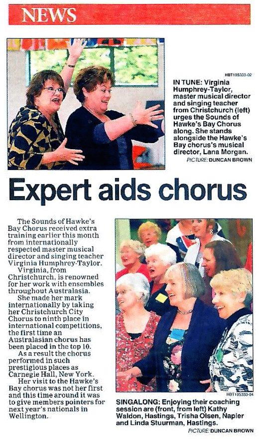

| Home |
| Master Class Topics |
| Singing Lessons / PVIs |
| Singers Workshops |
| - Class 1 |
| - Class 2 |
| - Class 3 |
| Coaching & Availability |
| Testimonials |
| Contact Virginia |
| Testimonials |
November 2010 - Hawkes Bay  Jocelyn Beath MusB.,Dip Mus.,FTCL.,LRSM.,Dip.Teach.,/IRMT To Whom It May Concern I am HOD Music at New Plymouth Boys High School. Recently we were fortunate enough to have Virginia Humphrey-Taylor present a series of workshops on voice & essential techniques to singing well for Taranaki Secondary Schools Choirs. Virginia is a gifted vocalist and teacher. With her intimate knowledge of vocal technique, she completely engaged the students, giving them a hands-on experience as they absorbed information about the voice and explored how to use the voice to best effect. Virginia has a dynamic and energetic presentation. She instils confidence in her participants. The students were thoroughly inspired and excited about singing and they implemented her ideas with enthusiasm. Virginia encouraged self-expression in a supportive listening environment, exploring news ways of using the voice and developing an understanding of the mechanics of singing in a new and exciting way. It was a wonderful experience and I unreservedly recommend to others these series of workshops. Virginia will inspire, excite, re-ignite a love of singing and expose a creativity amongst students that may not otherwise be realised! Thank you to Virginia for giving us this opportunity!
|